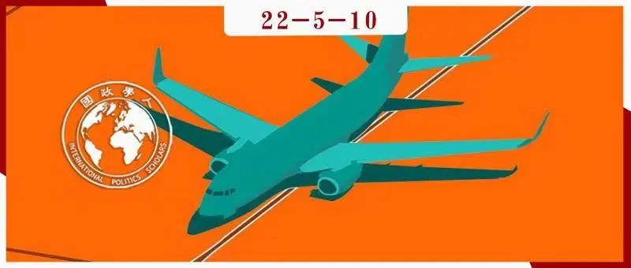

收录于合集

空难与国际政治：空难救援善后的治理困境
作者： Alan Chong，新加坡南洋理工大学拉惹勒南国际研究院副教授；Jun Yan Chang，新加坡南洋理工大学拉惹勒南国际研究院研究员。
编译： 房宇馨（国政学人编译员，北京外国语大学国际关系学院）
来源： Alan Chong & Jun Yan Chang (2018) The international politics of air disasters: lessons for aviation disaster governance from Asia, 2014–2015, Cambridge Review of International Affairs, 31:3-4, 249-271, DOI: 10.1080/09557571.2018.1510379

导读
2022年3月21日，从云南昆明到直飞广州白云的东航MU5735号航班在广西梧州藤县境内坠毁。机上123名乘客和9名机组人员全部遇难。4月20日，中国发布事故初步调查结果。然而，空难调查是一项复杂且漫长的工程，因此距离原因调查结果的公布仍需时日。如果延伸到国际空难调查事件，跨国性空难治理面临着哪些问题与挑战？具有哪些国际政治影响？是值得关注的话题。
本文通过研究亚洲的三场重大空难（MH370、MH17和QZ8501）指出，在空难救援与调查工作中，各国政府之间、政府与民间社会之间存在着多重信任及合作困境，对改善国际空难治理造成了极大阻碍。 第一，政府与民众之间的信任困境。 这一困境由民众因空难所引发的悲恸情绪所致，当空难真相迟迟未被揭露时，民众在媒体高强度报道的刺激下会将矛盾焦点对准政府。这种负面评价也将反作用于政府，促使其妥善处理善后工作以平息事态。 第二，主权国政府之间的合作困境。 在灾后救援的过程中，各国之间的安全竞争和政治博弈超过了专业合作，这种代理安全竞争导致的直接后果就是各国专业力量和资源无法进行有效整合，也无法发挥跨国合作应有的联动效应。 第三，全球空难治理的制度化困境。 当前的跨国性空难治理在诸多方面依然处于“无法可依”的阶段，空难治理的机制化程度远远不够。因此，当务之急是建立起多元主体共同参与空难救援的制度化机制，通过明确的规范及约束规则，厘清各主体在空难善后工作中的责任义务、参与途径以及经费来源等内容，实现空难救援多元主体的良性合作。
编译
01
MH370、MH17与QZ8501
本文的研究案例为2014年亚洲发生的三起重大空难，分别是3月8日马航MH370失联事件、7月17日马航MH17坠机事件和12月28日亚航QZ8501失事事件。之所以选择这些亚洲的空难事件，是因为近年来引发全球关注的重大空难大部分是由亚洲航空公司运营的客机引发的，并且其经验教训值得在全世界范围内推广。此外， 相较于其他国际空难事故，上述三个空难事故发生的地点和失事情况能够更好地展示事故善后和恢复工作的跨国性质。
（1）马航MH370失联事件
马来西亚航空公司MH370于2014年3月8日起飞，原定由吉隆坡直飞北京，机上包括机组人员在内共239人，其中多数为中国人。飞机于马来西亚时间0时41分起飞后，在1时7分传回了最后一次飞机通信和报告系统传输信号（ACARS），并于1时19分与吉隆坡塔台进行了最后一次航班通信。随后，在飞机进入南海上空的越南管辖空域时，飞机与地面雷达通信的应答器被关闭。由于越南空管部门未能确认客机位置，遂于1时39分与马来西亚方面进行联系，吉隆坡搜救协调中心最终于6时32分正式启动飞机搜救程序。
最初，搜救行动开始于“靠近越南领空的南海及泰国湾附近”，随后搜索范围扩大到“马来西亚半岛及其西海岸附近水域”，而后扩大到“马六甲海峡和印度尼西亚以北的安达曼海”。2014年3月15日，时任马来西亚总理纳吉布在一次新闻发布会上确认，根据卫星数据，飞机在失联后飞行了数小时，最后一次与卫星联络时间为8时11分，这意味着迄今为止参与搜索的“14个国家、43艘船只和58架飞机”一直在错误的区域搜索。根据进一步的数据分析，最终确定飞机坠入了南印度洋，但即使在MH370失踪两年后，澳大利亚领导的搜索小组仍没有发现飞机的踪迹。
（2）马航MH17坠机事件
马航MH17航班于欧洲中部时间2014年7月17日12时13分飞离阿姆斯特丹前往吉隆坡，机上共283名乘客以及15名机组人员。飞机于15时20分发出最后一次通信，而后一枚携带有9N314M型弹头的9M38系列BUK导弹在驾驶舱左上方爆炸。爆炸造成“驾驶舱内3人死亡”，并造成“飞机前部结构损坏，导致飞机在飞行中解体”。飞机于15时30分坠地，残骸坠落在“乌克兰东部50平方公里的区域内”。
由于当时乌克兰东部正处于内战之中，坠机地点位于亲俄分离主义分子控制的地区，所以飞机残骸和遇难者遗体的搜寻过程困难重重，内战冲突双方还互相指责对方应对坠机事件负责。同时， 由于国际社会的注意力集中在当时的乌克兰冲突上，空难的调查取证过程很快成为了各种国家和非国家行为体之间的一场政治博弈， 包括美国、俄罗斯、乌克兰、荷兰、马来西亚、英国、欧安组织、亲俄分离主义分子等在内的行为体纷纷从中搅局。最后，荷兰安全委员会的调查报告只提到击落这架飞机的是“俄罗斯制BUK导弹”，但没有将发射导弹的责任归咎于任何一方，因为乌克兰和俄罗斯都拥有相同类型的导弹。俄罗斯随后对报告提出异议，称该导弹已在俄罗斯逐步淘汰。
（3）亚航QZ8501失事事件
**
**
相比于MH370和MH17，亚航QZ8501的失事是由技术故障和人为错误引发的一场更普通的空难。QZ8501于当地时间2014年12月28日5时35分从印度尼西亚泗水飞往新加坡，机上共有162人，基本全为印尼国籍。6时12分，该飞机曾联系塔台请求从3.2万英尺的巡航高度爬升至3.8万英尺以“避开大型风暴云”，但随后飞机“很快从雷达屏幕上消失”。
根据飞机最后的已知位置，印度尼西亚、马来西亚、新加坡、澳大利亚、美国、中国等国都参与了搜救行动，搜索总面积达15.6万平方公里，最终从爪哇海中找到了飞机残骸和黑匣子。坠机近一年后，印度尼西亚国家运输公司发布的最终调查报告显示，技术故障和操作失误导致飞机进入“长期失速状态”，后以高达20000英尺每分钟的速度从38000英尺的高空直坠入爪哇海。然而，随着搜救工作进一步展开，政治焦点并不仅仅聚焦于在飞机制造商和航空公司，印尼政府的廉洁性也受到了审查。
02
媒介化的国际性的国内悲伤政治 ****
媒介化的国际性的国内悲伤政治（mediatized intermestic politics of grief），即媒体对空难遇难者亲友的悲恸报道使人们对国家为公民提供有关安全的社会契约的能力产生怀疑，并对国家应承担的责任进行问责。 当空难发生后，公众的悲伤情绪由三个因素引发：首先，人们无法在短时间内接受这种突发事故所带来的致命伤亡。 其次，媒体和社交软件的放大效应加剧了遇难者亲友的悲伤情绪。 推特、脸书、微博等平台的普遍化，使得空难后的悲伤和抱怨情绪几乎在瞬间内迅速蔓延。第三，在大多数情况下， 大众和社交媒体将这种情绪转化为一种与官方的描述相反的报复性表达，便会与政府间灾害管理的主权政治相互交织，甚至相互冲突，形成一种复杂的政治不和谐。 这种在无国界的全球信息空间中广泛传播的悲伤情绪瞬间引发的国家合法性危机，往往会迫使国家或相关实体改变救援的优先顺序。
（1）马航MH370失联事件
MH370事故发生后，各国民众自发进行了各种形式的网络悼念活动，#PRAYFORMH370以及MH370 PLEASE COME BACK等话题口号以及与失事飞机有关的图文在网络上广为流传。 媒体的全方位报道更加激发了人类共同的悲痛感和同情心，使得MH370发酵为一场全球悲剧。 由于MH370上多为马来西亚、中国和澳大利亚公民，考虑到公众强烈的悲伤情绪，三国政府认为有必要延长搜寻时间，并为搜寻工作持续提供了大量的资金援助。这些都是 公众悲痛情绪政治化的直接结果。
此外，遇难者家属与政府之间产生了激烈的冲突。媒体对事故的持续报道，使遇难者家属能够始终保持对事件的关注，但也是这些令人失望的新闻报道让家属们对搜救工作逐渐失去了希望。遇难者家属质疑马来西亚政府的搜救能力，反复在抗议中提出报复性的调查要求。中国遇难者亲属致信中国驻马来西亚特使，表达了对马来西亚拖延救援时间的不满，并恳请中方建立一个MH370调查办事处，以便在亲属与政府之间建立沟通渠道。
（2）马航MH17坠机事件
马航MH17被击落事件发生后，荷兰民众在阿姆斯特丹史基浦机场三号航站楼摆满了面包、泰迪熊和蜡烛等纪念品，并且对俄罗斯及其顿涅茨克盟军的空中谋杀行为表现出了极大的愤慨，指责荷兰政府只顾商业利益，而未对俄罗斯击落客机的行为加以谴责。面对民众的激烈反应，荷兰政府对俄罗斯的外交立场迅速变得强硬，呼吁欧盟对俄罗斯实施制裁，并在解决乌克兰- 俄罗斯冲突中做出更坚定的承诺。荷兰在埃因霍温机场为迎接MH17遇难者回国举行了庄严的仪式，仪式上悬挂了多国旗帜。尽管遇难者中没有乌克兰公民，但荷兰依然选择了悬挂乌克兰国旗，而刻意忽视了俄罗斯国旗。与此同时，反俄情绪在全球范围内开始抬头。这是公众悲痛情绪政治化又一次表现。
马航MH17还载有44名马来西亚乘客和机组人员，在从媒体中得知他们遇难的消息后，其亲属同样表现出了强烈的悲伤情绪。然而，纳吉布政府已经从MH370事件中吸取了教训。对所有悲痛的家庭来说，获得真相是最直接的目标。由于遇难者遗体和飞机残骸主要分布在亲俄分离主义分子控制的领土上，有报道称，纳吉布可能与这些叛军达成了某些政治交易以便顺利进行空难善后工作，包括默许顿涅茨克人民共和国为主权国。尽管这种交易存在争议，但这为纳吉布在马来西亚议会罕见地赢得了两党的共同赞誉，收获了政治资本，也赢得了遇难者家属的感激。
（3）亚航QZ8501失事事件
印尼政府及亚洲航空公司吸取了MH370的教训，在QZ8501航班失事后迅速采取了善后行动。在不到48小时的时间里，印度尼西亚副总统优素福·卡拉到访泗水机场，亲自安慰了遇难者亲属，并在亚航首席执行官托尼·费尔南德斯的陪同下举行了新闻发布会。印度尼西亚总统佐科·维多多亲自监督搜救工作，呼吁政府机构更快地传播信息，并迅速向新加坡、马来西亚、韩国、澳大利亚、中国和美国寻求帮助，这使得他赢得了前所未有的赞誉。值得注意的是，维多多政府将印尼水域内的搜索区域划分为七个区域，分别分配给了印尼（3个）、马来西亚（2个）及新加坡（2个）。并且，中国和美国的军舰也被邀请进入印尼主权水域，参与搜救工作。维多多政府在三个月内持续公布了对飞机残骸的各种调查报告结果，这在一定程度上避免了民众在社交媒体上的批评，也避免了遇难者亲属提出报复性调查的要求。
03
代理安全竞争
本文的两位作者曾在其文章中提出了“代理安全竞争”（security competition by proxy）的概念，对现有的“灾难外交”（disaster diplomacy）概念进行了补充。灾难外交主要“研究与灾难相关的活动为何以及如何引发敌对者之间的合作”。现有成果主要存在以下两种观点：第一，灾难产生了积极影响，即“催化或加速敌对双方的和解进程”。第二，灾难产生了负面影响，灾害“增加了不满情绪，增加了争夺资源的动机，同时降低了国家的应对能力”，从而“增加了国内暴力冲突的风险”，可能导致或加剧国际冲突。
除上述两种观点外， 代理安全竞争提供了第三种视角。代理安全竞争即“灾难为主要行为体（无论是否介入武装冲突或处于敌对态势）提供了机会，通过表达同情和参与重建行动，以战略竞争取代潜在的武装竞争。” 一旦各国优先利用安全视角来考量救灾和恢复工作，那么自然灾害就会被安全化，这也使行为体间具备了进行安全竞争的条件。 代理安全竞争提供了一条路径，使亚太国家能够利用低成本战略相互竞争，而不是进行会使各方陷入武装敌对状态的新现实主义动态竞争。 “人道主义援助与救灾（HADR）”为地缘政治竞争提供了完美的政治掩护，而不会带来因战争而造成的伤亡和民族主义者对领土增损和投降的不满，并允许军队在“合作”的幌子下进行竞争。
本文的两位作者在之前的文章中已对有关MH370的代理安全竞争进行了详细的论述，所以本文将在下文中着重分析MH17和QZ8501两次空难。
（1）马航MH17坠机事件
MH17事件的安全化使其迅速被贴上了俄罗斯和西方之间进行“新冷战”的标签 。 分析人士称俄罗斯入侵克里米亚是“新冷战”的开始，而MH17是“新冷战第一次代理冲突的受害者”。因此，对坠机事件的调查成为代理安全竞争的一种新的表现。由于坠机地点位于亲俄分离主义分子主导的冲突区内，所以寻找残骸和遗体以及调查取证都充满挑战。乌克兰分离主义分子被指控“阻碍（调查人员）进入坠机现场并篡改证据”，甚至可能在找到飞机的黑匣子后运往俄罗斯，干扰调查过程。对此，马来西亚、荷兰、美国等国公开向俄罗斯施压，要求俄罗斯利用对这些叛军的影响力，帮助调查小组进入坠机现场。与此同时，俄罗斯和乌克兰迅速对导弹的归属问题向对方提出了指控，美国也趁机向俄罗斯发难。在国际压力下，普京向荷兰首相吕特承诺，将在坠机地点找到遇难者遗体和黑匣子，并将其移交给荷兰。
由此可见，在MH17事件的调查过程中，荷兰扮演了领导者的角色。然而，MH17并非荷兰客机，荷兰也并不具备搜寻和调查飞机黑匣子的专业技术知识（荷兰必须将黑匣子移送英国航空事故调查局进行数据分析）。尽管如此，国际社会依然默许荷兰来领导事故调查，一方面是因为客观上荷兰更容易和俄罗斯进行沟通，另一方面是因为MH17的大多数乘客都是荷兰人，荷兰政府拥有亟需安抚国内的主观需求。这 进一步凸显出处理MH17空难的各种安全化态势，也呈现出空难调查阶段的代理安全竞争性质。
（2）亚航QZ8501失事事件
与MH370和MH17的搜寻过程相比，对QZ8501的搜寻可以说为“未来的合作开创了一个积极的先例”。然而，本文认为，当从代理安全竞争的角度思考时，QZ8501的搜救过程依然暴露出了相关国家在救援能力上的几个关键差距。在搜救的初始阶段，相较于印度尼西亚政府的搜索设备，新加坡政府所提供的搜救设备更为完备和先进。此外，发现QZ8501机身残骸的消息最先由新加坡国防部长吴英亨在其脸书上公布，而非来自印度尼西亚国家搜救局。由此可以看出代理安全竞争已经达到了顶点。
此外，当调查人员发现QZ8501是“在未经授权的时间表内飞行”，因为“印尼亚航从泗水飞新加坡这条航线在周日当天是没有航程的”。按照国际惯例，如果要更改航班时间必须由航空公司向起落两国的民航局提出申请，而民航当局之间则不需要进行协调。对于这一问题，新加坡民航局迅速做出回应，称新加坡方面已经批准，责任应由航空公司承担。由此，在QZ8501航班失事事件的调查过程中，各方之间存在明显的代理安全竞争。
04
全球航空治理的差距 ****
三次空难的后果还表明，全球航空治理存在不足，特别是在航空安全和空难恢复领域。本文从知识、规范、政策、机构和合规性等多方面进行了分析。
（1）实践知识差距
实践知识即“就特定问题的性质、严重性和重要性达成共识的基础”，本文所指为各国能否就飞机失事前最后的位置达成共识。
在MH370的案例中，在飞机的ACARS系统被关闭后，判断飞机飞行轨迹的唯一途径就是分析飞机卫星数据单元与地面站之间的“握手”。在分析QZ8501坠机的原因时，国际社会已吸取了之前的教训，在世界无线电通信会议上，来自160多个国家的代表共同决定，飞机上的广播式自动相关监视追踪系统（ADS-B）必须能够向卫星传输信号，改变了以往飞机ADS- B系统只能向其他飞机和地面站发送信号的现状。这一改进保证了地面能够“实时跟踪世界任何地方的飞机”，而之前的系统仅能“覆盖世界上约70%的空域”。
然而，虽然这些措施能够为空难救援提供更清晰的信息，但空难治理中依然存在明显的知识差距——对“代理安全竞争”的公开承认，这往往导致空难治理的低效和无效。在搜索MH370的过程存在两个最为致命的失误：初期推定飞机坠落南海的判断有误；飞机飞行途经的各个国家拒绝完全共享收集到的雷达信息。在MH17坠机事件中，亲俄的乌克兰分离主义分子一直在消极地阻碍飞机的搜寻和恢复工作。在对QZ8501的搜索中，印尼政府明显将搜索成功率更高的三个区域分配给了本国的军队，而将其他边缘区域分配给了搜救装备更为精良的新加坡和马来西亚。
（2）规范和政策差距
当搜救工作在本国的主权领土范围内进行时，救援行动便会受到较少干扰。而一旦搜救工作涉及多国领土，救援行动便会受到诸多规范和政策的制约。 显然，各国都未形成一套关于空难搜救的标准操作程序（standard operating procedure，SOP）。 例如，国际战略研究所（IISS）发布的《2015年亚太地区安全评估》强调，指定搜索和救援区域需要在《国际航空和海上搜救手册》（International Aeronautical and Maritime Search and Rescue Manual，IAMSAR）和全球海上遇险和安全系统（Global Maritime Distress and Safety System，GMDSS）的框架内进行，这样才能保证地方和国家救援协调中心的搜救行动能够覆盖有争议的海上边界地区，及时处理海上事故而不致拖延。但在实践中，上述建议未能得到重视， 各国也未能针对如何在争议边界地区实施合作搜救建立起一套完备的制度。 不仅如此，既有规范甚至可能与空难救援需求背道而驰。在MH370和QZ8501的案例中，还有人认为，东盟成员国遵守“尊重主权”和“协商一致决策”的准则影响了搜寻失踪飞机的行动。
此外，所有重大空难的调查基本都可以被视为是一项涉及多国的国际性事务，但目前国际上除“调查责任属于事故或事件发生国”的普遍性指导方针外，在选择某一国家来领导空难调查工作这个问题上几乎没有明确的准则或政策可以遵循。因此，调查空难的责任分配很容易“变得模糊，有时甚至变得极为争议”。MH370最终由澳大利亚承担最后的搜索任务，MH17最终由机上乘客来源国最多的荷兰负责调查，而QZ8501主要由印尼负责救援和调查。难以想象，如果没有一个国家主动领导甚至承担搜救或调查的费用，会发生什么？
（3）机构和合规性差距
在国际航空领域，国际民航组织（ICAO）和国际航空运输协会（IATA）这两个主要的多边机构显然并未被赋予治理和执行规则的职责。后者主要关注航空经济和工业议题，而前者从一开始就是一个主权国家之间就航空自由达成妥协的产物，其建立旨在促进安全、航行和标准化等方面的国际合作，而不具备强有力的监管职责。换言之，国际民航组织成立的基础就是对各国领空主权的承认和尊重。因此，在三个案例中，在空难发生后，国际民航组织和国际航空运输协会都被排除在搜救和调查行动之外。诚然，与大多数其他联合国机构一样，国际民航组织等机构没有足够的资金来支持空难搜救行动，但这些机构本可以在空难发生后提供更多监督。
在空难发生之前，也存在明显的合规性和机构差距。MH370航班上有两名乘客冒用了他人的护照登记，而马来西亚当局却未能发现。在MH17的案例中，由于当前并未制定关于在冲突区上空使用空域的国际法规，所以只要联合国未宣布该地区为禁飞区，相关国家的航空管理局也没有发布正式的禁飞令，那么是否飞越冲突区便由航空公司自行决定，这导致MH17飞越了乌克兰东部的冲突地区。同样，QZ8501也是在未经印尼民航局许可的情况下，根据航空公司的判断，按照未经授权的时间表飞行的。 由此可见，没有明确制定的规范和政策，也不存在一个可约束各方遵守规则的权威机构，关于空难的全球航空治理依然薄弱。
05
结论：全球空难治理的经验教训
本文提出了三项政策建议，以改善空难治理。
第一，为了将空难发生后的人道主义援助与救灾完全规范为一种后现代式的合作模式，相关合作伙伴之间应及时透明地共享信息，而不应为进行代理安全竞争而隐瞒敏感信息（尤其是关于军事领域）。第二，在空难发生后，国家必须在国内治理以及处理与其他国家的外交关系中表现出强大的领导力。第三，需要制定并实施适当的空难搜救协议和标准程序，以便将政治影响降至最低，并最大限度地努力进行搜救工作。虽然这些措施在一个无政府主义的国际体系中很难实现，但这些建议有助于提升领导力、信任感和互操作性，以便迅速应对空难所造成的危机。
词汇积累 ****
国际性的国内悲伤政治 ****
intermestic politics of grief
代理安全竞争
security competition by proxy
灾难外交 disaster diplomacy
人道主义援助与救灾
humanitarian assistance and disaster relief，HADR
审校 | 张曼娜 聂涵琳
排版 | 任航奇 王佳怡
文章观点不代表本平台观点，本平台评译分享的文章均出于专业学习之用, 不以任何盈利为目的，内容主要呈现对原文的介绍，原文内容请通过各高校购买的数据库自行下载。
国政学人
支持学术公益与知识传播
微信扫一扫赞赏作者 __赞赏
已喜欢，对作者说句悄悄话
取消 __
发送给作者
发送
最多40字，当前共字
上一页 1/3 下一页
长按二维码向我转账
支持学术公益与知识传播
受苹果公司新规定影响，微信 iOS 版的赞赏功能被关闭，可通过二维码转账支持公众号。